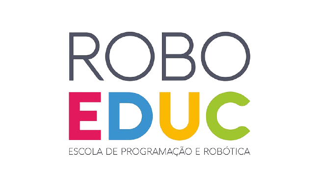
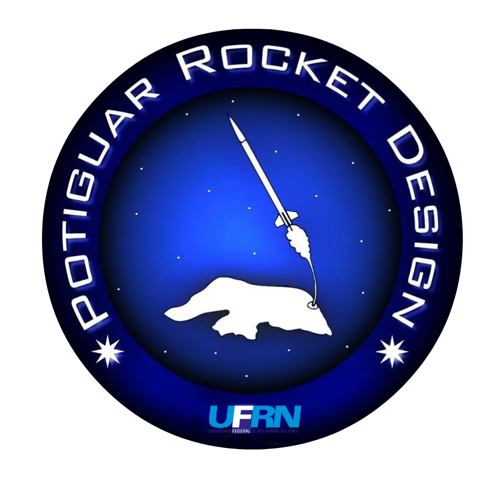

Elisa Gabriela
Dados pessoais
Telefone:99999999
email:email@gmail.com
Localidade:Natal-RN
Formação
UFRN - 2019 - atualmente
Graduanda em ciências & tecnologia com ênfase em tecnologia da computação
Experiências Profissionais

Roboeduc - Escola de Robótica e Progamação - Setembro de 2021 - atualmente

Potiguar Rocket Design 2020 - atualmente
Diretoria de Gestão de pessoas
- Realização de atividades relacionadas a gestão de membros da equipe
- Organização de Processos seletivos externos e eleições internas
- idealização e aplicação de avaliações de desempenho
- uso de ferramentas e métodos de gestão: Notion, Trello, Excel, Scrum, Kanbam.
Setor de Eletrônica e Controle
Convecção de sistemas embarcados para foguetes academicos,
o portifólio dos meus projetos podem ser encontrados aqui